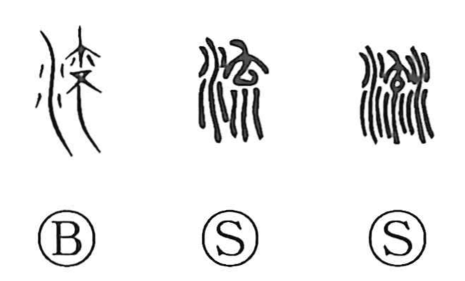

Explanation
流 combines water with 㐬, which shows a child upside down with disordered hair. The old forms picture the child being carried away in the water. This gives ‘flow,’ ‘drift,’ and ‘let flow’: both the moving water and what it bears along.
Floods could carry away many bodies. Related graphs distinguish their positions: 氾 shows a body face down, 泛 one face up, and 浮 a hand reaching from above to rescue a child in the water. There was also an ancient custom of placing a newborn on the water before deciding whether to rear it. These scenes give the flowing water an immediate human setting.
From movement with a current, 流 broadens to a continuing course or stream. A stream of people, practice, or influence can then form a circle, tradition, or lineage, as well as a literal flow of water.